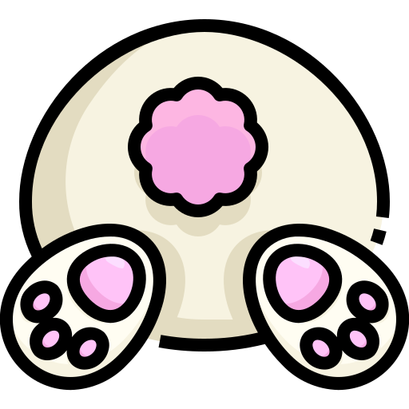
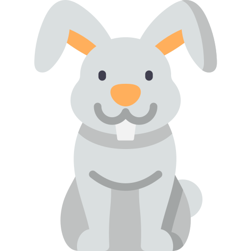

Curiosidades mais peculiares sobre os Coelhos
São independentes em relação à higiene
Coelhos se mostram bastante independentes em relação à sua higiene e não apreciam ambientes sujos. Eles se limpam sozinhos, assim como os gatos. Banhos não são recomendados e podem ser prejudiciais, exceto em casos de sujeira excessiva. Nesses casos, recomenda-se usar água morna e produtos específicos.
Coelhos comem as próprias fezes
Parte do material fecal que produzem é conhecido como “cecotrofos”, ingeridos assim que depositados, já que ainda existem nutrientes que podem ser aproveitados pelos coelhos. Por isso, é comum que os vejamos comer as próprias fezes.
Dentes de coelho nunca param de crescer
Apesar de não serem considerados roedores e sim lagomorfos, coelhos compartilham essa característica que dependem do ato de roer. Por isso mesmo, seus dentes precisam ser continuamente desgastados com a ajuda de uma alimentação apropriada e de brinquedos para evitar problemas de saúde.
Como são os olhos e a visão do coelho?
Sua visão periférica chega a quase 360º. Isso significa que você nunca vai conseguir chegar de surpresa até ele. Os olhos de coelho possuem um único ponto cego, na frente de seu nariz. Porém, isso não é um problema para o dentuço, já que ele possui uma infinidade de pelos táteis nessa região. Por se tratar de uma presa, a visão do coelho é excelente. Ele enxerga bem tanto de dia quanto à noite e tem perfeita noção de profundidade e distância, necessárias para ver um predador se aproximando.
Quais cores o coelho enxerga?
Sabemos que esses animais enxergam diferentes tons porque eles possuem as células responsáveis por captar cores nos olhos, que são os cones. Os humanos possuem três variedades desses cones, já os coelhos, somente duas. Isso significa que eles enxergam com uma paleta mais reduzida de cores do que nós. E quais cores os coelhos enxergam? Acredita-se que eles vejam verde, azul e suas variações.
Alimentação
Melhores Rações
A ração deve compor a maior parte de sua dieta. Também conhecida como alimentos extrusados, esse produto é feito especialmente para os orelhudos. Ofereça diariamente, no mínimo 3 vezes ao dia. Abaixo estão as rações com melhor qualidade! Ração Nutrópica Coelho Filhote Essa é uma das rações mais recomendadas para coelhos filhotes, pois contém mais de 30 ingredientes diferentes incluindo alfafa e vários tipos de grãos integrais como aveia, ervilha, linhaça e trigo, que juntos proporcionam os níveis ideais dos nutrientes necessários para a saúde, beleza, bem-estar e vitalidade do coelho. Principais benefícios
- 100% natural
- Mais brilho à pelagem, e pele saudável
- Mais saúde e vitalidade vai ajudar na disposição do dia a dia
- Muito mais saboroso por ser natural
Ração Nutricon Nutrirabbit É um alimento completo, extrusado, formulado especificamente para atender às exigências nutricionais de coelhos de todas as idades. Possui alto valor nutritivo, contendo em sua fórmula ingredientes de excelente qualidade, além de conter prebiótico e ser enriquecido com complexos vitamínicos e minerais. Principais benefícios
- Alimento completo extrusado para coelhos tradicionais e mini coelhos
- Possui alto valor nutritivo
- Contém vitamina C proporcionando uma vida mais saudável ao seu coelho
Ração Megazoo para Coelhos Filhotes A ração Megazoo não contém casca de ovo, possui minerais quelatados, glutamina e ômega 3 de cadeia longa (DHA). Alimento 100% natural à base de alecrim, se destaca como a primeira ração super premium de coelhos da América Latina – possui um alto controle de qualidade. Principais benefícios
- Formato mais compacto para desgaste dos dentes
- Minerais quelatados
- Prebióticos Mos e Fos
- Ômega 3 de cadeia longa – DHA
- 100 % natural antioxidante à base de alecrim
Pode dar comidas além de ração?
Sim! Aqui em baixo estão algumas indicações. Feno É essencial para cuidar da alimentação do bichinho já que ajuda o sistema digestivo dos coelhos. Também deve ser oferecido diariamente. Como tem pouco valor nutricional, não é necessário se preocupar com porções: deixe seu orelhudo comer à vontade! Verduras, as verduras também servem como comida para coelho. Para animais adultos, o ideal é comer verduras todos os dias. Mas atenção: nem todas as verduras são benéficas para a saúde dos peludinhos. Algumas possuem substâncias que podem ser laxantes. O ideal é buscar vegetais com folhas escuras, que costumam ser mais seguros. Rúcula: os orelhudos adoram o sabor amargo e picante da rúcula. Couve: ofereça apenas crua e sem tempero. Legumes, os coelhos adoram legumes, mas eles não fazem parte de sua dieta cotidiana. Como legumes crus possuem uma digestão mais complexa, a ingestão deve ocorrer uma vez a cada dois dias. Folhas de brócolis: evite dar os talos, pois podem causar gases no seu pet. Cenouras: ocasionalmente, os coelhos podem, sim, comer cenoura! Beterraba: deverá ser oferecida crua e sempre sem tempero. Frutas, também são sensíveis para os nossos amiguinhos, pois possuem açúcar e carboidratos. Devem ser oferecidas como petiscos uma ou duas vezes por semana. Morango: além dos coelhos adorarem, é uma fruta pequena, o que favorece a ingestão. Manga: outra fruta que faz sucesso entre os dentuços. Descasque e cuidado com o caroço. Kiwi: os coelhos gostam dessa fruta azedinha. Não se esqueça de descascar.
Alimentos proibidos para coelhos
Além da carne, existem alguns outros alimentos que entram na lista do que coelho não pode comer. Alguns deles são: batata e inhame: esses legumes contêm alto teor de solanina, um elemento tóxico para o animal. Além disso, são alimentos calóricos para um coelho, por isso, devem ser eliminados da dieta; arroz e pão: possuem excesso de carboidratos, que é prejudicial ao sistema digestivo do coelho. Por isso, são alimentos que não devem estar na dieta do animal; lácteos: são os alimentos derivados do leite, muito prejudiciais ao sistema digestivo do coelho, por isso, não podem ser incorporados à dieta.
Doenças
São duas as doenças principais contra as quais todos os coelhos devem ser vacinados:
Mixomatose
A mixomatose é uma infeção provocada pelo vírus da mixomatose. Tanto os coelhos selvagens como os domésticos estão em risco. Estes animais podem ficar infetados seja por contacto direto ou indireto, através de mosquitos e outros insetos. No caso dos coelhos domésticos, a transmissão por forragem infetada tem também um papel importante. Nódulos nos tecidos subcutâneos são típicos desta doença. As zonas genitais e da cabeça são especialmente afetadas. Além do mais, febre e descargas purulentas no nariz e nos olhos são comuns. A maioria dos coelhos afetados morre em cerca de duas semanas, pois não são capazes de ingerir comida suficiente devido ao enorme inchaço.
Doença hemorrágica viral do coelho
A doença hemorrágica viral do coelho (DHV) constitui uma ameaça especialmente insidiosa. A maior parte dos coelhos afetados morre subitamente ou dentro de poucas horas sem apresentar quaisquer sintomas. Caso surjam sintomas, os principais são hemorragia, febre e dificuldades respiratórias. A doença é desencadeada pelo vírus da DHV, da família dos calicivírus. Tal como na mixomatose, a transmissão da DHV dá-se diretamente, através do contato com coelhos infectados, ou indiretamente, através de insetos ou objetos (comedouros ou outros acessórios da gaiola).
Vacinação
| Vacina | Mixomatose | DHV | Vacinação Primária | Reforço |
|---|---|---|---|---|
| Filavac VHD K C+V | x | a partir das 10 semanas | anual | |
| Nobivac Myxo-RHD Plus | x | x | a partir das 5 semanas | anual |
| Rika-Vacc Myxo sc | x | a partir das 4 semanas | bianual |